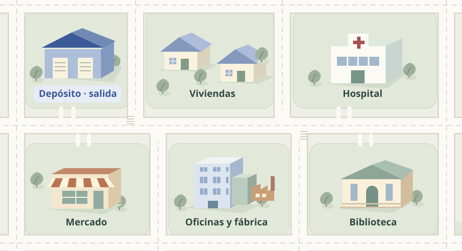

BBúsqueda Tabú Contexto
¿Por qué necesitamos Búsqueda Tabú?

Visitar todos los destinos → volver a la bodega → menor distancia

El problema es que hay muchísimas rutas que podríamos escoger.
Método exacto
La mejor solución con garantía de que es óptima.
En el agente viajero, puede tomar mucho tiempo.
Heurística
Buena solución en un tiempo razonable, sin garantía de óptimo.
Estancamiento
Se agotan las mejoras cercanas.
Búsqueda Tabú → memoria para continuar explorando